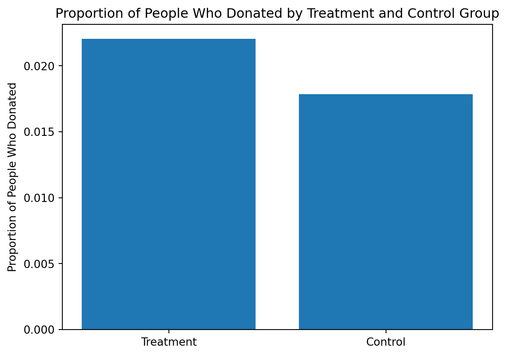
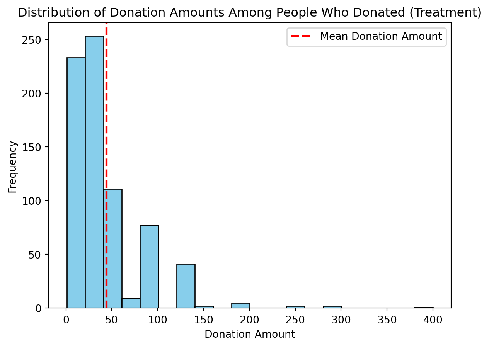
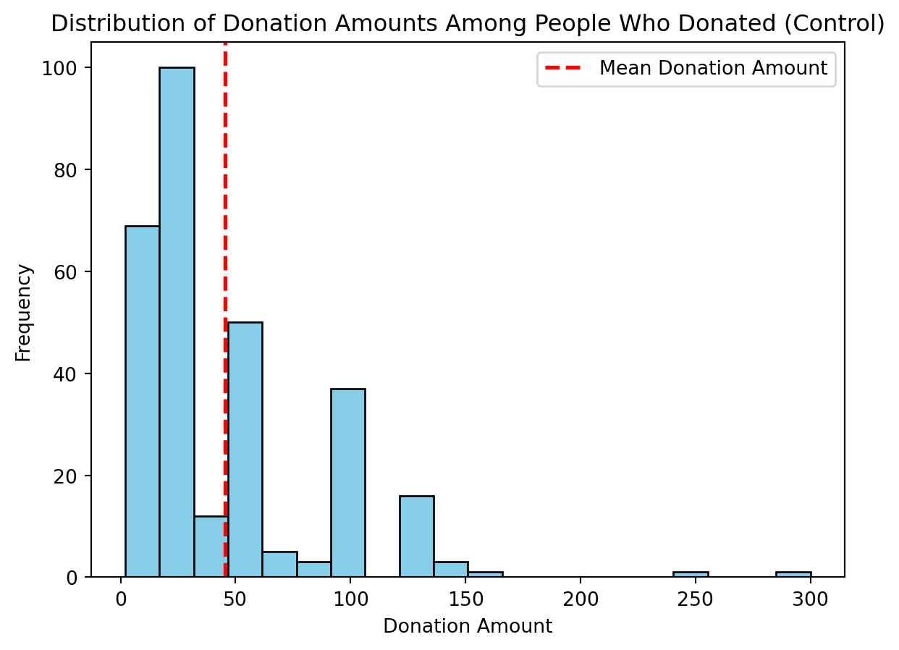
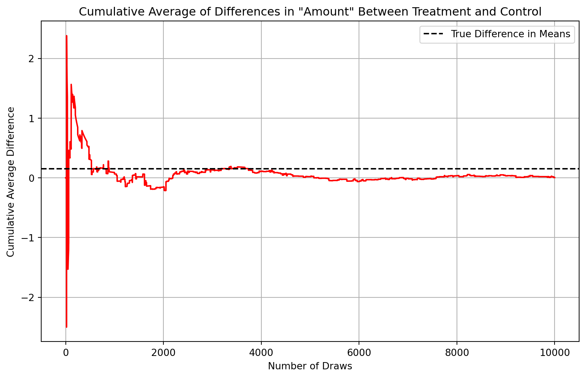
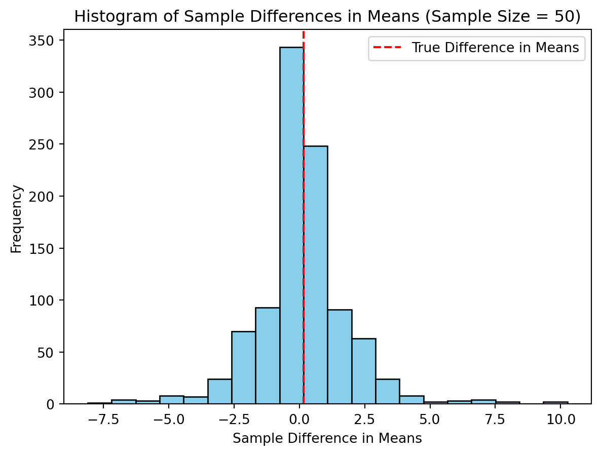
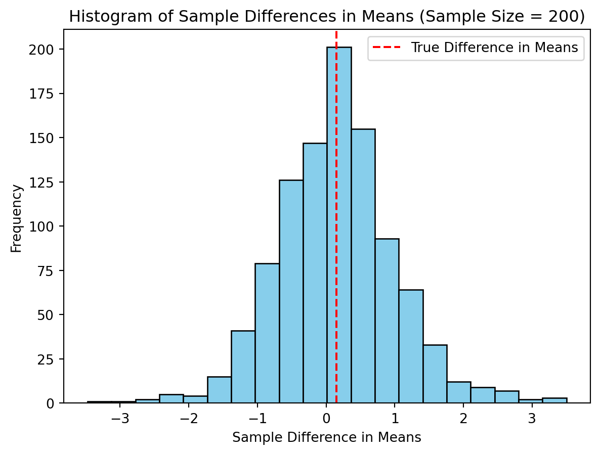
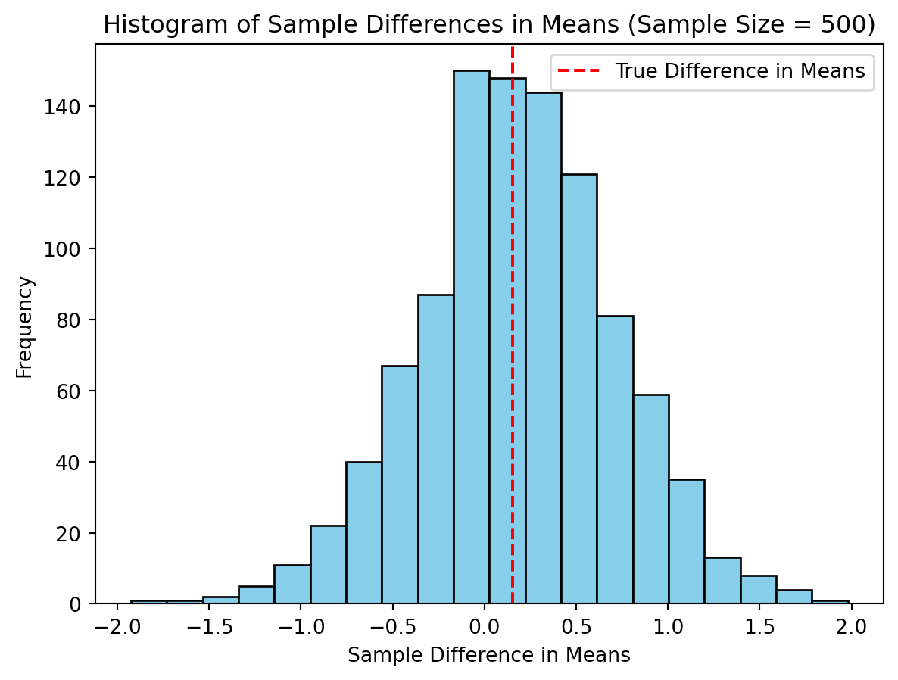
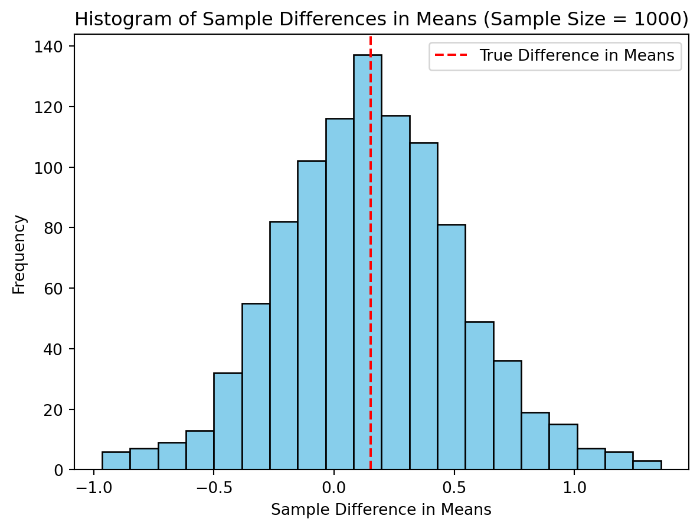

Dean Karlan at Yale and John List at the University of Chicago conducted a field experiment to test the effectiveness of different fundraising letters. They sent out 50,000 fundraising letters to potential donors, randomly assigning each letter to one of three treatments: a standard letter, a matching grant letter, or a challenge grant letter. They published the results of this experiment in the American Economic Review in 2007. The article and supporting data are available from the AEA website and from Innovations for Poverty Action as part of Harvard’s Dataverse.
This project seeks to replicate their results. Expand this part
Data
import pandas as pddata = pd.read_stata('data/karlan_list_2007.dta')data.to_csv('data/karlan_list_2007.csv', index=False)data
treatment
control
ratio
ratio2
ratio3
size
size25
size50
size100
sizeno
...
redcty
bluecty
pwhite
pblack
page18_39
ave_hh_sz
median_hhincome
powner
psch_atlstba
pop_propurban
0
0
1
Control
0
0
Control
0
0
0
0
...
0.0
1.0
0.446493
0.527769
0.317591
2.10
28517.0
0.499807
0.324528
1.000000
1
0
1
Control
0
0
Control
0
0
0
0
...
1.0
0.0
NaN
NaN
NaN
NaN
NaN
NaN
NaN
NaN
2
1
0
1
0
0
$100,000
0
0
1
0
...
0.0
1.0
0.935706
0.011948
0.276128
2.48
51175.0
0.721941
0.192668
1.000000
3
1
0
1
0
0
Unstated
0
0
0
1
...
1.0
0.0
0.888331
0.010760
0.279412
2.65
79269.0
0.920431
0.412142
1.000000
4
1
0
1
0
0
$50,000
0
1
0
0
...
0.0
1.0
0.759014
0.127421
0.442389
1.85
40908.0
0.416072
0.439965
1.000000
...
...
...
...
...
...
...
...
...
...
...
...
...
...
...
...
...
...
...
...
...
...
50078
1
0
1
0
0
$25,000
1
0
0
0
...
0.0
1.0
0.872797
0.089959
0.257265
2.13
45047.0
0.771316
0.263744
1.000000
50079
0
1
Control
0
0
Control
0
0
0
0
...
0.0
1.0
0.688262
0.108889
0.288792
2.67
74655.0
0.741931
0.586466
1.000000
50080
0
1
Control
0
0
Control
0
0
0
0
...
1.0
0.0
0.900000
0.021311
0.178689
2.36
26667.0
0.778689
0.107930
0.000000
50081
1
0
3
0
1
Unstated
0
0
0
1
...
1.0
0.0
0.917206
0.008257
0.225619
2.57
39530.0
0.733988
0.184768
0.634903
50082
1
0
3
0
1
$25,000
1
0
0
0
...
0.0
1.0
0.530023
0.074112
0.340698
3.70
48744.0
0.717843
0.127941
0.994181
50083 rows × 51 columns
Description of Data
The data set contains 50,083 observations and 51 variables. The key variables are as follows:
Variable Definitions
Variable
Description
treatment
Treatment
control
Control
ratio
Match ratio
ratio2
2:1 match ratio
ratio3
3:1 match ratio
size
Match threshold
size25
$25,000 match threshold
size50
$50,000 match threshold
size100
$100,000 match threshold
sizeno
Unstated match threshold
ask
Suggested donation amount
askd1
Suggested donation was highest previous contribution
askd2
Suggested donation was 1.25 x highest previous contribution
askd3
Suggested donation was 1.50 x highest previous contribution
ask1
Highest previous contribution (for suggestion)
ask2
1.25 x highest previous contribution (for suggestion)
ask3
1.50 x highest previous contribution (for suggestion)
amount
Dollars given
gave
Gave anything
amountchange
Change in amount given
hpa
Highest previous contribution
ltmedmra
Small prior donor: last gift was less than median $35
freq
Number of prior donations
years
Number of years since initial donation
year5
At least 5 years since initial donation
mrm2
Number of months since last donation
dormant
Already donated in 2005
female
Female
couple
Couple
state50one
State tag: 1 for one observation of each of 50 states; 0 otherwise
nonlit
Nonlitigation
cases
Court cases from state in 2004-5 in which organization was involved
statecnt
Percent of sample from state
stateresponse
Proportion of sample from the state who gave
stateresponset
Proportion of treated sample from the state who gave
stateresponsec
Proportion of control sample from the state who gave
stateresponsetminc
stateresponset - stateresponsec
perbush
State vote share for Bush
close25
State vote share for Bush between 47.5% and 52.5%
red0
Red state
blue0
Blue state
redcty
Red county
bluecty
Blue county
pwhite
Proportion white within zip code
pblack
Proportion black within zip code
page18_39
Proportion age 18-39 within zip code
ave_hh_sz
Average household size within zip code
median_hhincome
Median household income within zip code
powner
Proportion house owner within zip code
psch_atlstba
Proportion who finished college within zip code
pop_propurban
Proportion of population urban within zip code
Balance Test
As an ad hoc test of the randomization mechanism, I provide a series of tests that compare aspects of the treatment and control groups to assess whether they are statistically significantly different from one another.
todo: test a few variables other than the key outcome variables (for example, test months since last donation) to see if the treatment and control groups are statistically significantly different at the 95% confidence level. Do each as a t-test and separately as a linear regression, and confirm you get the exact same results from both methods. When doing a t-test, use the formula in the class slides. When doing the linear regression, regress for example mrm2 on treatment and look at the estimated coefficient on the treatment variable. It might be helpful to compare parts of your analysis to Table 1 in the paper. Be sure to comment on your results (hint: why is Table 1 included in the paper).
Months Since Last Donation (mrm2)
Using the variable mrm2, I test the balance of the treatment and control groups. I first calculate the difference in means between the treatment and control groups and then use both a t-test and linear regression to test whether this difference is statistically significant at the 95% confidence level.
#first, let's test the balance of the treatment and control groups on the variable mrm2 using a t-test#average months since last donation for the treatment grouptreatment_mrm2 = data[data['treatment'] ==1]['mrm2'].mean()#average months since last donation for the control groupcontrol_mrm2 = data[data['control'] ==1]['mrm2'].mean()#standard deviation of months since last donation for the treatment grouptreatment_mrm2_sd = data[data['treatment'] ==1]['mrm2'].std()#standard deviation of months since last donation for the control groupcontrol_mrm2_sd = data[data['control'] ==1]['mrm2'].std()#number of observations in the treatment groupn_treatment = data['treatment'].sum()#number of observations in the control groupn_control = data['control'].sum()#difference in means between the treatment and control groupsdiff_mrm2 = treatment_mrm2 - control_mrm2print("difference in means between control and treatment group for mrm2: ", diff_mrm2)#t-statistict_stat_mrm2 = (treatment_mrm2 - control_mrm2) / (((treatment_mrm2_sd**2/ n_treatment) + (control_mrm2_sd**2/ n_control))**0.5)print("t-statistic for mrm2: ", t_stat_mrm2)#convert the t-statistic to a p-valuefrom scipy.stats import tp_value_mrm2 = t.sf(t_stat_mrm2, n_treatment + n_control -2)*2print("p-value for mrm2: ", p_value_mrm2)
difference in means between control and treatment group for mrm2: 0.013685851546783923
t-statistic for mrm2: 0.11953214935937886
p-value for mrm2: 0.9048542505673348
#now let's test the balance of the treatment and control groups on the variable mrm2 using a linear regressionimport statsmodels.api as smmodel = sm.OLS.from_formula('mrm2 ~ treatment', data=data)results = model.fit()#extract the coefficient and p_value on the treatment variablecoef = results.params['treatment']t_stat = results.tvalues['treatment']p_value = results.pvalues['treatment']print("coefficient for mrm2: ", coef)print("t-statistic for mrm2: ", t_stat)print("p-value for mrm2: ", p_value)
coefficient for mrm2: 0.013685851546783642
t-statistic for mrm2: 0.11949210581591664
p-value for mrm2: 0.9048859731777759
Using both the t-test and linear regression, the p-value for the difference in means between the treatment and control groups for the variable mrm2 is 0.905. This means that if the null hypothesis is true, we would expect to see a difference in means as extreme as the one we observed in 0.905% of cases. Therefore, we fail to reject the null hypothesis that the treatment and control groups are statistically significantly different at the 95% confidence level. This suggests that the randomization was successful and the treatment and control groups are balanced with respect to the variable mrm2.
Highest Previous Contribution (hpa)
Next, I test the balance of the treatment and control groups on the variable hpa using both a t-test and linear regression.
#average highest previous contribution for the treatment grouptreatment_hpa = data[data['treatment'] ==1]['hpa'].mean()#average highest previous contribution for the control groupcontrol_hpa = data[data['control'] ==1]['hpa'].mean()#standard deviation of highest previous contribution for the treatment grouptreatment_hpa_sd = data[data['treatment'] ==1]['hpa'].std()#standard deviation of highest previous contribution for the control groupcontrol_hpa_sd = data[data['control'] ==1]['hpa'].std()#number of observations in the treatment groupn_treatment = data['treatment'].sum()#number of observations in the control groupn_control = data['control'].sum()#difference in means between the treatment and control groupsdiff_hpa = treatment_hpa - control_hpaprint("difference in means between control and treatment group for hpa: ", diff_hpa)#t-statistict_stat_hpa = (treatment_hpa - control_hpa) / (((treatment_hpa_sd**2/ n_treatment) + (control_hpa_sd**2/ n_control))**0.5)print("t-statistic for hpa: ", t_stat_hpa)#convert the t-statistic to a p-valuep_value_hpa = t.sf(t_stat_hpa, n_treatment + n_control -2)*2print("p-value for hpa: ", p_value_hpa)
difference in means between control and treatment group for hpa: 0.6370735
t-statistic for hpa: 0.9703896843548359
p-value for hpa: 0.3318569750696071
#now let's test the balance of the treatment and control groups on the variable hpa using a linear regressionmodel = sm.OLS.from_formula('hpa ~ treatment', data=data)results = model.fit()#extract the coefficient and p_value on the treatment variablecoef = results.params['treatment']t_stat = results.tvalues['treatment']p_value = results.pvalues['treatment']print("coefficient for hpa: ", coef)print("t-statistic for hpa: ", t_stat)print("p-value for hpa: ", p_value)
coefficient for hpa: 0.6370752896561251
t-statistic for hpa: 0.9441476332014095
p-value for hpa: 0.3450987657186726
Using both the t-test and linear regression, the p-value for the difference in means between the treatment and control groups for the variable hpa is 0.34. This means that if the null hypothesis is true, we would expect to see a difference in means as extreme as the one we observed in 34% of cases. Therefore, we fail to reject the null hypothesis that the treatment and control groups are statistically significantly different at the 95% confidence level. This suggests that the randomization was successful and the treatment and control groups are balanced with respect to the variable hpa.
Charitable Contribution Made
First, I analyze whether matched donations lead to an increased response rate of making a donation.
todo: make a barplot with two bars. Each bar is the proportion of people who donated. One bar for treatment and one bar for control.
import matplotlib.pyplot as plt#proportion of people who donated in the treatment groupprop_treatment = data[data['treatment'] ==1]['gave'].mean()#proportion of people who donated in the control groupprop_control = data[data['control'] ==1]['gave'].mean()plt.bar(['Treatment', 'Control'], [prop_treatment, prop_control])plt.ylabel('Proportion of People Who Donated')plt.title('Proportion of People Who Donated by Treatment and Control Group')plt.show()

todo: run a t-test between the treatment and control groups on the binary outcome of whether any charitable donation was made. Also run a bivariate linear regression that demonstrates the same finding. (It may help to confirm your calculations match Table 2a Panel A.) Report your statistical results and interpret them in the context of the experiment (e.g., if you found a difference with a small p-value or that was statistically significant at some threshold, what have you learned about human behavior? Use mostly English words, not numbers or stats, to explain your finding.)
#t-test between treatment and control groups on the binary outcome of whether any charitable donation was madefrom scipy.stats import ttest_indtreatment_gave = data[data['treatment'] ==1]['gave']control_gave = data[data['control'] ==1]['gave']diff = treatment_gave.mean() - control_gave.mean()t_stat, p_value = ttest_ind(treatment_gave, control_gave)print("difference in response rates between control and treatment: ", diff)print("t-statistic: ", t_stat)print("p-value: ", p_value)
difference in response rates between control and treatment: 0.00418035451294875
t-statistic: 3.101361000543946
p-value: 0.0019274025949016982
#bivariate linear regression that demonstrates the same findingmodel = sm.OLS(data['gave'], sm.add_constant(data['treatment']))results = model.fit()#extract the coefficient and p_value on the treatment variablecoef = results.params['treatment']t_stat = results.tvalues['treatment']p_value = results.pvalues['treatment']print("coefficient: ", coef)print("t-statistic: ", t_stat)print("p-value: ", p_value)
The t-test and linear regression both show that the difference in response rates between the treatment and control groups is statistically significant at the 95% confidence level. This suggests that the treatment of receiving a matched donation led to an increased likelihood of making a charitable donation. This finding is consistent with the results reported in Table 2a Panel A of the paper and their interpretation that the treatment effect is statistically significant.
todo: run a probit regression where the outcome variable is whether any charitable donation was made and the explanatory variable is assignment to treatment or control. Confirm that your results replicate Table 3 column 1 in the paper.
Optimization terminated successfully.
Current function value: 0.100443
Iterations 7
coefficient 0.08678462244745848
z-statistic: 3.112930073795023
p-value: 0.0018523990147783487
Probit Regression Results
Dep. Variable:
gave
No. Observations:
50083
Model:
Probit
Df Residuals:
50081
Method:
MLE
Df Model:
1
Date:
Fri, 12 Apr 2024
Pseudo R-squ.:
0.0009783
Time:
18:38:06
Log-Likelihood:
-5030.5
converged:
True
LL-Null:
-5035.4
Covariance Type:
nonrobust
LLR p-value:
0.001696
coef
std err
z
P>|z|
[0.025
0.975]
const
-2.1001
0.023
-90.073
0.000
-2.146
-2.054
treatment
0.0868
0.028
3.113
0.002
0.032
0.141
The probit regression confirms that the coefficient on the treatment variable is statistically significant at the 95% confidence level. This result is consistent with the findings reported in Table 3 column 1 of the paper, which suggests that the treatment of receiving a matched donation led to an increased likelihood of making a charitable donation.
Differences between Match Rates
Next, I assess the effectiveness of different sizes of matched donations on the response rate.
_todo: Use a series of t-tests to test whether the size of the match ratio has an effect on whether people donate or not. For example, does the 2:1 match rate lead increase the likelihood that someone donates as compared to the 1:1 match rate? Do your results support the “figures suggest” comment the authors make on page 8?
#t-test between 1:1 and 2:1 match ratios on the binary outcome of whether any charitable donation was madetreatment_gave_1 = data[data['treatment'] ==1]['gave'][data['ratio'] ==1]treatment_gave_2 = data[data['treatment'] ==1]['gave'][data['ratio'] ==2]diff = treatment_gave_2.mean() - treatment_gave_1.mean()t_stat, p_value = ttest_ind(treatment_gave_2, treatment_gave_1)print("difference in response rates between 1:1 and 2:1 match ratios: ", diff)print("t-statistic: ", t_stat)print("p-value: ", p_value)
difference in response rates between 1:1 and 2:1 match ratios: 0.0018842510217149944
t-statistic: 0.96504713432247
p-value: 0.33453168549723933
#t-test between 2:1 and 3:1 match ratios on the binary outcome of whether any charitable donation was madetreatment_gave_2 = data[data['treatment'] ==1]['gave'][data['ratio'] ==2]treatment_gave_3 = data[data['treatment'] ==1]['gave'][data['ratio'] ==3]diff = treatment_gave_3.mean() - treatment_gave_2.mean()t_stat, p_value = ttest_ind(treatment_gave_3, treatment_gave_2)print("difference in response rates between 2:1 and 3:1 match ratios: ", diff)print("t-statistic: ", t_stat)print("p-value: ", p_value)
difference in response rates between 2:1 and 3:1 match ratios: 0.00010002398025293902
t-statistic: 0.05011583793874515
p-value: 0.9600305283739325
#t-test between 1:1 and 3:1 match ratios on the binary outcome of whether any charitable donation was madetreatment_gave_1 = data[data['treatment'] ==1]['gave'][data['ratio'] ==1]treatment_gave_3 = data[data['treatment'] ==1]['gave'][data['ratio'] ==3]diff = treatment_gave_3.mean() - treatment_gave_1.mean()t_stat, p_value = ttest_ind(treatment_gave_3, treatment_gave_1)print("difference in response rates between 1:1 and 3:1 match ratios: ", diff)print("t-statistic: ", t_stat)print("p-value: ", p_value)
difference in response rates between 1:1 and 3:1 match ratios: 0.0019842750019679334
t-statistic: 1.0150255853798622
p-value: 0.3101046637086672
The t-tests and the resulting p-values show that the difference in response rates between the 1:1 and 2:1 match ratios, the 2:1 and 3:1 match ratios, and the 1:1 and 3:1 match ratios are all statistically insignificant at the 95% confidence level. This suggests that the size of the matched donation does not have a statistically significant effect on the likelihood of making a charitable donation. This finding is consistent with the comment the authors make on page 8, which suggests that the figures do not suggest a clear pattern of increasing response rates with larger match ratios.
todo: Assess the same issue using a regression. Specifically, create the variable ratio1 then regress gave on ratio1, ratio2, and ratio3 (or alternatively, regress gave on the categorical variable ratio). Interpret the coefficients and their statistical precision.
# Create a new variable 'ratio1' that is equal to 1 if the match ratio is 1:1 and 0 otherwisedata['ratio1'] = (data['ratio'] ==1).astype(int)model = sm.Probit.from_formula('gave ~ ratio1 + ratio2 + ratio3', data=data)results = model.fit()results.summary()
Optimization terminated successfully.
Current function value: 0.100430
Iterations 7
Probit Regression Results
Dep. Variable:
gave
No. Observations:
50083
Model:
Probit
Df Residuals:
50079
Method:
MLE
Df Model:
3
Date:
Fri, 12 Apr 2024
Pseudo R-squ.:
0.001108
Time:
18:38:07
Log-Likelihood:
-5029.8
converged:
True
LL-Null:
-5035.4
Covariance Type:
nonrobust
LLR p-value:
0.01091
coef
std err
z
P>|z|
[0.025
0.975]
Intercept
-2.1001
0.023
-90.073
0.000
-2.146
-2.054
ratio1
0.0616
0.036
1.726
0.084
-0.008
0.132
ratio2
0.0980
0.035
2.792
0.005
0.029
0.167
ratio3
0.0998
0.035
2.847
0.004
0.031
0.169
The regression results show that the coefficients on the ratio variable are statistically insignificant at the 90% confidence level. Ratio1 (1:1) has a coefficient of -0.0029 with p-value of .097, ratio2 (2:1) has a coefficient of -0.0048 with p-value of .006, and ratio3 (3:1) has a coefficient of -0.0049 with p-value of .005. This suggests that the
todo: Calculate the response rate difference between the 1:1 and 2:1 match ratios and the 2:1 and 3:1 ratios. Do this directly from the data, and do it by computing the differences in the fitted coefficients of the previous regression. what do you conclude regarding the effectiveness of different sizes of matched donations?
Size of Charitable Contribution
In this subsection, I analyze the effect of the size of matched donation on the size of the charitable contribution.
todo: Calculate a t-test or run a bivariate linear regression of the donation amount on the treatment status. What do we learn from doing this analysis?
#t-test between treatment and control groups on the donation amounttreatment_amount = data[data['treatment'] ==1]['amount']control_amount = data[data['control'] ==1]['amount']diff = treatment_amount.mean() - control_amount.mean()t_stat, p_value = ttest_ind(treatment_amount, control_amount)print("difference in donation amounts between control and treatment: ", diff)print("t-statistic: ", t_stat)print("p-value: ", p_value)
difference in donation amounts between control and treatment: 0.1536054
t-statistic: 1.8605020225753781
p-value: 0.06282038947470686
#bivariate linear regression of the donation amount on the treatment statusmodel = sm.OLS.from_formula('amount ~ treatment', data=data)results = model.fit()#extract the coefficient and p_value on the treatment variablecoef = results.params['treatment']t_stat = results.tvalues['treatment']p_value = results.pvalues['treatment']print("coefficient: ", coef)print("t-statistic: ", t_stat)print("p-value: ", p_value)
The p-value (.063) for the difference in donation amounts between the treatment and control groups is statistically significant at the 90% confidence level. This suggests that the treatment of receiving a matched donation led to a higher average donation amount.
todo: now limit the data to just people who made a donation and repeat the previous analysis. This regression allows you to analyze how much respondents donate conditional on donating some positive amount. Interpret the regression coefficients – what did we learn? Does the treatment coefficient have a causal interpretation?
#limit the data to just people who made a donationdonated_data = data[data['gave'] ==1]#t-test between treatment and control groups on the donation amount among people who donatedtreatment_amount = donated_data[donated_data['treatment'] ==1]['amount']control_amount = donated_data[donated_data['control'] ==1]['amount']diff = treatment_amount.mean() - control_amount.mean()t_stat, p_value = ttest_ind(treatment_amount, control_amount)print("difference in donation amounts between control and treatment among people who donated: ", diff)print("t-statistic: ", t_stat)print("p-value: ", p_value)
difference in donation amounts between control and treatment among people who donated: -1.6683922
t-statistic: -0.5808388615237938
p-value: 0.5614758782284279
#bivariate linear regression of the donation amount on the treatment status among people who donatedmodel = sm.OLS.from_formula('amount ~ treatment', data=donated_data)results = model.fit()#extract the coefficient and p_value on the treatment variablecoef = results.params['treatment']t_stat = results.tvalues['treatment']p_value = results.pvalues['treatment']print("coefficient: ", coef)print("t-statistic: ", t_stat)print("p-value: ", p_value)
Among all the people who donated, those who did not recieve the treatment of matching donation actually donated more on average. However, the p-value (.56) suggests that this difference is not statistically significant. So we cannot conclude that the treatment of receiving a matched donation led to a higher average donation amount among people who donated.
_todo: Make two plot: one for the treatment group and one for the control. Each plot should be a histogram of the donation amounts only among people who donated. Add a red vertical bar or some other annotation to indicate the sample average for each plot.
#plot histogram of donation amounts for the treatment group among people who donatedplt.hist(donated_data[donated_data['treatment'] ==1]['amount'], bins=20, color='skyblue', edgecolor='black')plt.axvline(donated_data[donated_data['treatment'] ==1]['amount'].mean(), color='red', linestyle='dashed', linewidth=2, label='Mean Donation Amount')plt.title('Distribution of Donation Amounts Among People Who Donated (Treatment)')plt.xlabel('Donation Amount')plt.ylabel('Frequency')plt.legend()plt.show()#plot histogram of donation amounts for the control group among people who donatedplt.hist(donated_data[donated_data['control'] ==1]['amount'], bins=20, color='skyblue', edgecolor='black')plt.axvline(donated_data[donated_data['control'] ==1]['amount'].mean(), color='red', linestyle='dashed', linewidth=2, label='Mean Donation Amount')plt.title('Distribution of Donation Amounts Among People Who Donated (Control)')plt.xlabel('Donation Amount')plt.ylabel('Frequency')plt.legend()plt.show()


Simulation Experiment
As a reminder of how the t-statistic “works,” in this section I use simulation to demonstrate the Law of Large Numbers and the Central Limit Theorem.
Suppose the true distribution of respondents who do not get a charitable donation match is Bernoulli with probability p=0.018 that a donation is made.
Further suppose that the true distribution of respondents who do get a charitable donation match of any size is Bernoulli with probability p=0.022 that a donation is made.
Law of Large Numbers
to do: Make a plot like those on slide 43 from our first class and explain the plot to the reader. To do this, you will simulate 100,00 draws from the control distribution and 10,000 draws from the treatment distribution. You’ll then calculate a vector of 10,000 differences, and then you’ll plot the cumulative average of that vector of differences. Comment on whether the cumulative average approaches the true difference in means.
import numpy as npimport matplotlib.pyplot as plt# Separate the treatment and control groups for the "amount" variabletreatment_amount = data[data['treatment'] ==1]['amount']control_amount = data[data['treatment'] ==0]['amount']# Calculate the true difference in meanstrue_diff = treatment_amount.mean() - control_amount.mean()np.random.seed(0)# Simulate 100,000 draws from the control distributionsimulated_control_draws = np.random.choice(control_amount, 10000, replace=False)simulated_treatment_draws = np.random.choice(treatment_amount, 10000, replace=False)# Calculate the vector of 10,000 differencesdifferences = simulated_treatment_draws - simulated_control_draws# Calculate the cumulative average of the vector of differencescumulative_average_differences = np.cumsum(differences) / np.arange(1, 10001)plt.figure(figsize=(10, 6))plt.plot(cumulative_average_differences, color='red')plt.axhline(y=true_diff, color='black', linestyle='--', label='True Difference in Means')plt.xlabel('Number of Draws')plt.ylabel('Cumulative Average Difference')plt.title('Cumulative Average of Differences in "Amount" Between Treatment and Control')plt.legend()plt.grid(True)plt.show()

The plot shows the cumulative average of the differences in “amount” between the treatment and control groups as the number of draws increases. The cumulative average approaches the true difference in means as the number of draws increases, which demonstrates the Law of Large Numbers. This means that the more draws we take, the closer the average difference in “amount” between the treatment and control groups will be to the true difference in means.
Central Limit Theorem
to do: Make 4 histograms like those on slide 44 from our first class at sample sizes 50, 200, 500, and 1000 and explain these plots to the reader. To do this for a sample size of e.g. 50, take 50 draws from each of the control and treatment distributions, and calculate the average difference between those draws. Then repeat that process 999 more times so that you have 1000 averages. Plot the histogram of those averages. Comment on whether zero is in the “middle” of the distribution or whether it’s in the “tail.”
import numpy as npimport matplotlib.pyplot as plttreatment_amount = data[data['treatment'] ==1]['amount']control_amount = data[data['treatment'] ==0]['amount']true_diff = treatment_amount.mean()-control_amount.mean()print('True Difference in mean of "amount" between Control and Treatment:', true_diff)# Simulate 1000 draws of 50, 200, 500, and 1000 from both the control and treatment distributionssample_sizes = [50, 200, 500, 1000]num_simulations =1000np.random.seed(0)for sample_size in sample_sizes: sample_diffs = []for _ inrange(num_simulations): simulated_control_draws = np.random.choice(control_amount, sample_size, replace=False) simulated_treatment_draws = np.random.choice(treatment_amount, sample_size, replace=False) sample_diffs.append(simulated_treatment_draws.mean() - simulated_control_draws.mean()) plt.hist(sample_diffs, bins=20, color='skyblue', edgecolor='black') plt.axvline(x=true_diff, color='red', linestyle='--', label='True Difference in Means') plt.xlabel('Sample Difference in Means') plt.ylabel('Frequency') plt.title(f'Histogram of Sample Differences in Means (Sample Size = {sample_size})') plt.legend() plt.show()
True Difference in mean of "amount" between Control and Treatment: 0.1536054




The above histgram illustrates the Central Limit Theorem. As the sample size increases, the sampling distribution of the average of differences between the mean becomes normal. The zero is in the middle of the distribution because the true difference in mean of the amount variable between the control and treament is close to zero and the difference is not significant as proven earlier.